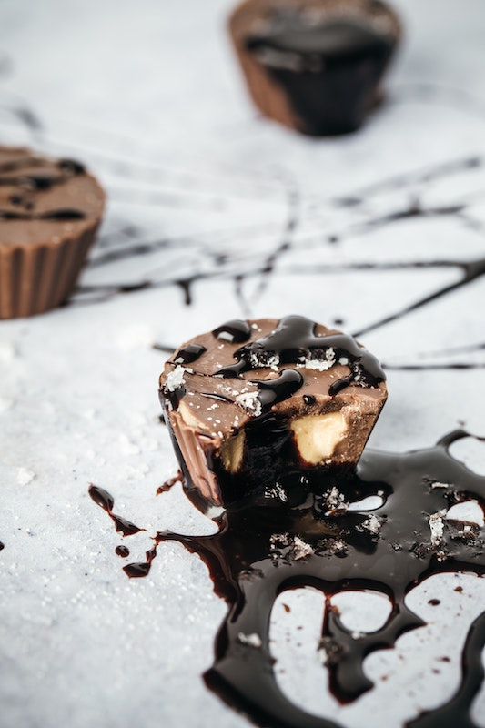

Chocolate Coconut Peanut Butter Cups
Delicious recipe
This is a chocolate peanut butter cup recipe
which will make you go nuts.
This recipe consists of a mixture of healthy ingredients.
Cocoa powder, natural chunky peanut butter, coconut butter, coconut oil,
and Swerve®, will make you go absolutely crazy when they are put together.
Ingredient list:
2 tablespoons of cocoa powder
2 tablespoons of coconut oil
2 tablespoons of coconut Butter
2-3 tablespoons of Swerve® erithritol sweetener
1/4 cup of natural chunky peanut Butter
Procedure:
1. Heat the 2 tablespoons of coconut oil in the microwave for
30 seconds (in case it is not liquid) and place the oil on an aluminum foil pad.
2. Add the coconut butter (might need melting procedure as
well), peanut butter, erythritol and cocoa powder and mix all the
ingredients together.
3. Pour the content on tiny, individual aluminum foil ramekins.
4. Put in the freezer for 20 - 30 minutes
5. Take ramekins out of the freezer and leave at room temperature for
5 minutes or more.
6. Gently, twist the aluminim foil ramekins until the chocolate peanut butter cups
pop out.
7. Enjoy! Dont forget to refrigerate the leftovers, since coconut oil
is very sensitive to any increase in temperature.
